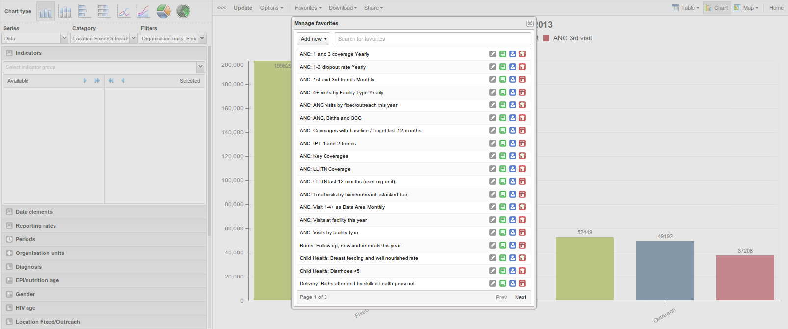

Once you have rendered a chart you can save it as a favorite to able to access it easily at a later point. Click on the "Favorites" button on the top menu to open up the favorites window. Click "Add new" and in the name field enter the desired name for your chart. The chart will be visible only to yourself. For every favorite in the list you have four options to the right. You can rename the chart (grey button), overwrite the chart (green button), modify the sharing settings of the chart (blue button) or delete the chart (red button).
These favorite charts can later be included on your personal dashboard. After saving you can navigate to the dashboard module, click on the "Insert" link over the chart areas and select your preferred chart.
|  |